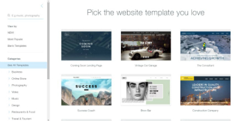
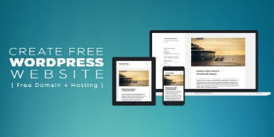

Choose your CMS
What is Suqarespace?
In a nutshell, Squarespace is an all-in-one platform that allows you to build a website from start to finish by yourself with no outside help, and then have it hosted on suauarespace`s servers.
squarespace costs $8-$24 per month depending on the plan you select. Plus the cost of a domain should you choose to buy one.
Squarespace is an online tool. It is an platform can be used by everyone, even you have no experience with building website.
What is WordPress?
.jpg) WordPress is open source software that you download and install on your web server. You can build your website on top of that.
It can help you manage your website in an effective way.
It is free to use, but you do have to pay the web host, where you will install Wordpress.Which usually costs between $5 and $10 a month, plus the domain which for WordPress you will need to buy on your own.
You need to have a server space before you can use WordPress, then you can have WordPress installed on it.
WordPress is open source software that you download and install on your web server. You can build your website on top of that.
It can help you manage your website in an effective way.
It is free to use, but you do have to pay the web host, where you will install Wordpress.Which usually costs between $5 and $10 a month, plus the domain which for WordPress you will need to buy on your own.
You need to have a server space before you can use WordPress, then you can have WordPress installed on it.
Set up Squarespace site and WordPress site
Squarespace site

With Squarespace site, you can get free trial without the requrement of a credit card.
You need to choose a template you want in order to start the free trial. You can take a preview as a full site before you are going to choose the template.
You are going to create an account after we choose the template. We will get a tittle for our website.
We can design our web page on the menu which is on the left side.
WordPress

You can get a good deal at siteGround, the link will be in the description below. Once you sign up for a SiteGround account, you can install WordPress by going to the Cpanel area.
There will install WordPress on the domin you chose when you signed up for SiteGround. You'll get an email from SiteGround With the link for your WordPress installation.
There are lots of powerful plug-in on the WordPress
One of WordPress' most powerful features and the feture give us a lot of the hosted solutions out there, is its powerful blogging engine. WordPress started off as a blogging system at first, and it reminds this day a core price of functionality within WordPress. WordPress easily allows you to create new blog posts add categories and tags and a lot more.
You can add and manage users in a way that Squarespace doesn`t allow you to.
You can make the your web however you want through the use of themes, plugins, and of its more powerful features.
How to determine which to use
Squarespace Pro
Hosted Solution - They take care of everything!
Impressive set of designs, organized by purpose
Great site builder that gudes you in a visual way
Lots of built-in features.
Squarespace Cons
You don`t control the site. Squarespace can shut it down or disappear at any time
Similar designs that make assumptions
Customization is limited by what the platform offers.
WordPress Pro
Free and Open Source
Thousands of designs and plugins- it`s very extensible.
Powers over 29% of the web
Safe, with active community
You own your site and have full control
Excellent content management capabilities
Squarespace Cons
You need to buy hosting and domain
it`s harder to find quality themes/plugins
There`s no clear on-boarding process
There`s no support,per-say
No true WYSIWYG editing.
Use squarespace if
You want to create a website on your own with no technical knowledge
Squarespace is user-friendly,intuitive, and has a very clear start and finish
Use WordPress if
You want more freedom in building your site, and have some technical knowledge
You are not afraid to learn some HTML and maybe CSS
WordPress has a lot of freedom,potential, gives you control, and has a great community.